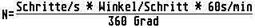
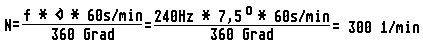
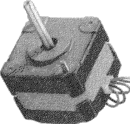
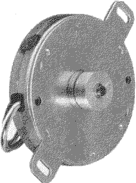

Previous
Next
TOC
Erhöht man die Polpaarzahl auf dem Statorumfang, so verringert sich
der Schrittwinkel entsprechend. In der Praxis arbeitet man häufig
mit einem Polabstand von 15 Grad und erzielt mit 24 Schritten eine
volle Umdrehung.
Die Drehzahl der Schrittmotoren hängt einmal von der Pulsfrequenz
aber auch von der Motorkonstruktion (Polzahl) ab. Zwischen der Fre-
quenz und der Drehzahl besteht folgende Beziehung:

Als Ergebnis erhält man die Drehzahl in Umdrehungen/min.
Ein Schrittmotor hat einen Winkel je Schritt von 7 Grad 30 Minuten
und wird mit einer Pulsfreqenz von 240Hz = 240 Schritte/s gesteuert.
Wie groß ist seine Drehzahl ?

Schrittmotoren sitzen in jeden Diskettenlaufwerk und werden dazu be-
nutzt, um die Schreib-/Leseköpfe zu positionieren. In Festplatten
gibt es ebenfalls Schrittmotoren, die jedoch meist eine andere Bau-
form besitzen als die in Diskettenlaufwerken verwendeten Typen.


Kapitel Die verschiedenen Typen von Schrittmotoren, Seite 2